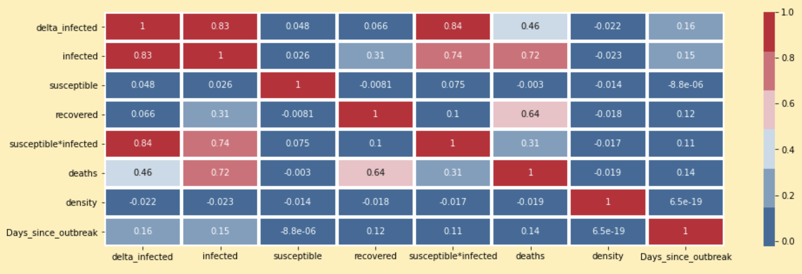
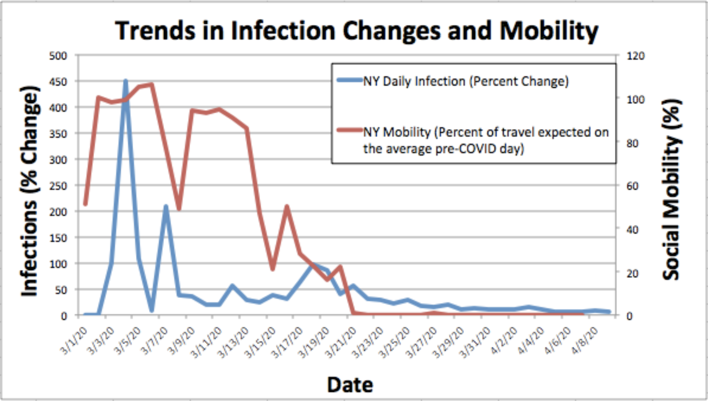
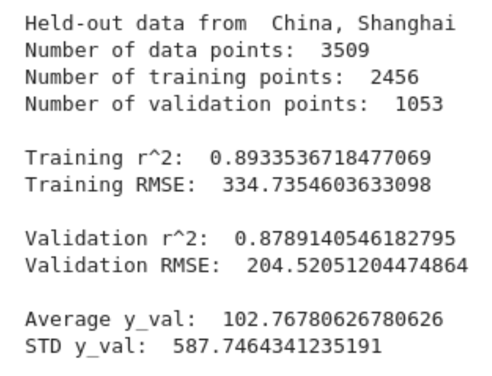
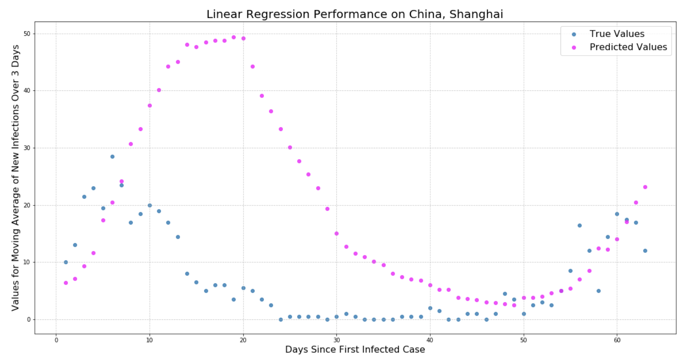
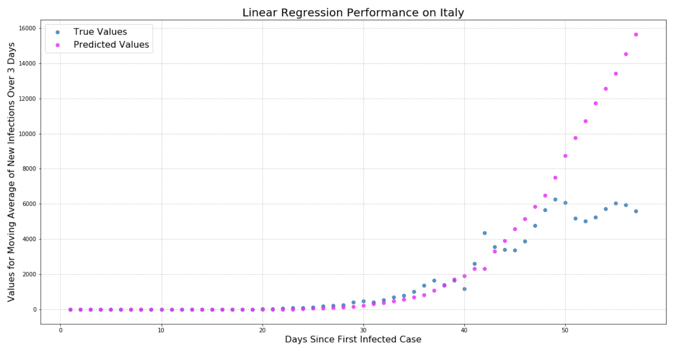
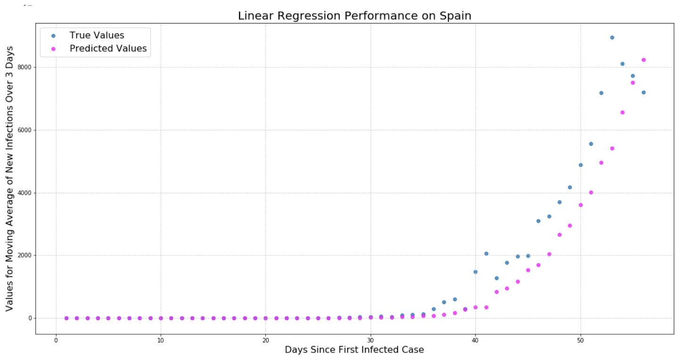
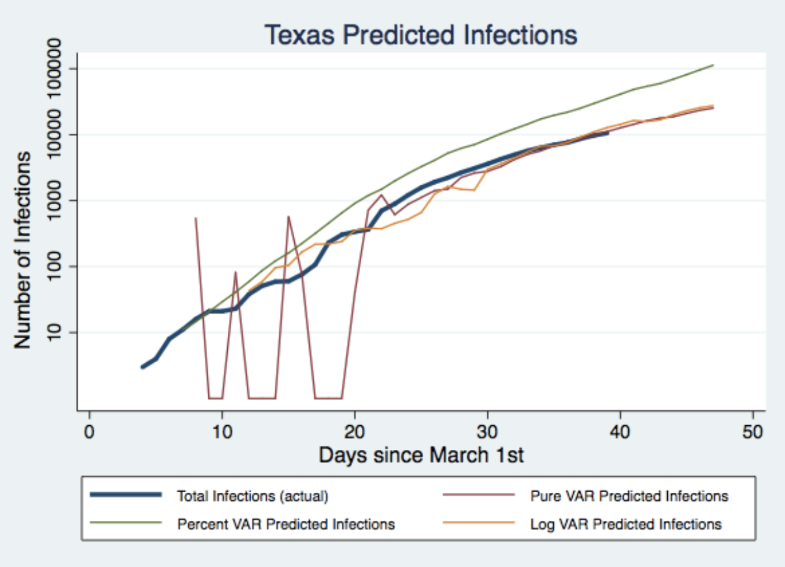

TR1ND1 Analysis Deliverable
(nrshaida, rmani1, tphilli6, dcheong)
Prediction Task
Our goal is to forecast infection trends, of up to a week from the current date, for locations affected by COVID-19, given relevant data such as current infections, susceptible people, recovered cases, deaths, mobility score and other factors we might consider. To measure our success, we would test our model’s ability to predict hidden historical infection rates. Specifically, we will succeed if we achieve a low Root-Mean-Squared error between our predicted number of new infections versus the true historical number of new infections. We also don’t want our model to underpredict new infection rates that are higher than 100, because that would have negative consequences if a city used our model to predict future infection rates to prepare hospital supplies accordingly.
Methodology
In order to forecast infection trends, we plan to first predict next-day infections, recovered, and deaths. If we perform well on this task, we can then use these next-day predictions to run a simulation on a markov chain to arrive at predictions further in the future.
In this deliverable, we present our machine learning model to predict next-day infections. We are still in the process of refining our predictions for next-day recovered numbers and deaths. Once we have machine learning models for all three values we can move on to forecasting on a markov chain.
In total we have tried two different models: a linear regression model, and a time series model. The reason being we have a dataset that covers global cities for a period of a few months with data that is well suited for a linear regression, however we have also recently found data on mobility in US cities that is suited for a time series model. We plan to eventually incorporate mobility data into our first model in the future. However, as of now our mobility dataset covers a smaller subset of locations for a subset of the time period, so we’re still exploring it’s predictive ability to help us decide whether we want to search for mobility data that covers more locations and a longer time period. We believe that adding mobility data into our model might address various weaknesses that we discuss in our results section.
Linear Regression
To predict next-day infections, we decided to perform linear regression on multiple variables. We used a multiple variable linear regression for various reasons. Firstly, although we had found correlations between infection rates and various factors, each individual independent variable had poor predicting performance, so we decided to improve performance by considering more variables at the same time.
However, we want to avoid including too many variables and making our model too complex, because this might result in overfitting. As such, we capture the relationship between our variables in a correlation matrix below so that we can select the variables that have the highest correlation with infection rates. In addition, as another measure to reduce model complexity and prevent overfitting, we added a Lasso regularizer to our linear regression.
The figure below shows the correlation matrix between our variables. Our values come from data collected on countries/cities with documented COVID-19 infections for at least 50 days. Additionally, none of the values collected are sensitive or protected attributes.The variables recorded are as follows:
- delta_infected: the moving average of new infection counts over a 3 day period in each location. We use the change in infection counts on any given day t from t-1 to t+1.
- infected: the current days counts of infected people with COVID19 for each location
- susceptible: the location’s population that is susceptible to being infected by COVID19
- recovered: location’s counts of recovered people from COVID19
- susceptible*infected: a variable from the SIR model that we thought would be helpful in predicting new infection rates, but including it in our predictive model did not affect the r^2
- deaths: location’s cumulative counts of deaths from COVID19
- density: the countries population density as of January 2020
- days_since_outbreak: days since the first recorded case of COVID19 in that location
Heatmap of the Correlation Matrix
From this correlation matrix, we determined that the most significant variables to use in our linear regression would be current-day infections, deaths, and days-since-outbreak. Although susceptible*infected also had high correlation with our target variable, this variable is highly correlated with infection numbers, so we suspect that most of its correlation with the target variable can be explained by the target variable’s correlation with infection numbers.
While performing and fine-tuning our linear regression, we also discovered that we had to perform some additional data cleaning. Specifically, we removed ‘China, Hubei’ from our training dataset because data from this province has high variance and the numerical pattern of its infection varies greatly from other locations in our dataset. Our prediction model performs better once we remove this location from our dataset. One possible explanation for the variance of data from ‘China, Hubei’ is that it was the original pandemic epicenter, and so the circumstances of the spread of the virus in this location differs from the pattern of spreading elsewhere.
Finally, at this point of our project, we only split our data into training and validation sets. There are two reasons for this. Firstly, we’re still experimenting with collecting data on other factors to improve our results, and fixing the data points that we’ll use for testing data makes this task more complicated. Secondly, we’re also waiting for additional data to come in. Every additional day gives us more data and allows us to better capture the full trend of infection patterns. Since we want to take a sample of data from across all dates in our testing data, we want to split our dataset into train/validate/test sets at a later date as well. At a future date we’ll freeze our data and split it accordingly, then refine our machine learning model on the train/validation datasets before evaluating it on our hidden test dataset.
Time Series Regression
Our mobility dataset gives us daily values of how much people travel each day-- this variable is labelled as “social mobility”. However, as briefly mentioned above, this data could not be incorporated into the above analysis for the following reasons:
- The data starts on March 1st, in contrast to the other data which began in January.
- The data is entirely based in the United States, albeit it’s exceptionally detailed, giving results for every single state and county.
In spite of these limitations, the format of this data was highly compatible with a small subset of infection data because dates and locations matched entirely. Here we could construct two matching time series and perform a specialized analysis checking correlations and predictive power. This analysis was worth it because the mobility data is a potential variable that could capture factors that are external to the virus, such as government interventions and changing social behaviour, that can help us predict when and how the infection curve will turn downward. Below is an example of how these curves look for New York State:
In this graph, 100% mobility corresponds to the average pre-COVID level of distance traveled, or the “normal level” of travel.
The two main options were ARIMA (autoregressive integrated moving average) and VAR (vector autoregression). We chose VAR for the following reasons:
- Our data is stationary, meaning it’s a stochastic process whose probability distribution does not change when shifted in time.
- VAR allows for reverse causality, which is certainly plausible given infection reporting and daily travel.
- VAR has less parameters to specify and is easier to work with in Stata. The only parameter is the number of lags.
The main challenge was selecting the number of lags (how many days back in time the model is supposed to look) for VAR. We know there is a significant lag because social mobility is instantaneously recorded, while there is a delay between an infection and when that infection is recorded. It is advised to choose a lag number that minimizes any of three penalty functions for the VAR model: namely Akaike, Schwarz-Bayesian, or Hannan-Quinn (link, p. 388). In the end we settled on 8 lags because it both minimized these functions and seemed like a logical expectation for the real world.
We concluded the best way to incorporate the time series of each of the 50 states was to concatenate them into one combined time series. With gaps between each state, the model would not falsely think the end of one series influenced the start of the next, but it would still learn the pattern with 40 times the amount of a single series. In order to split the data into training and testing using the 80/20 split, we used 40 states for training and 10 states for testing.
Results
Linear Regression
87.891% of the variation in the moving average of new infections over 3 day windows is reduced by taking into account the 3 independent variables (days since outbreak, current day infection counts, and deaths) collectively.
Looking at these results, we see that our root-mean-squared error is larger than our average true values, which means that the total errors in our predictions are significant. However, we also notice that the standard deviation of our true values is also much larger than our root-mean-squared error, which suggests that the large root-mean-squared error might be a result of large variations in our data.
To visualise the performance of our linear regression, we randomly selected a location and held-out data from that location. We then used our model to predict the moving average of new infections for that location, and compare our predicted values with the true values. Below are our results for Shanghai:
From this graph we observed that while our predicted values match the true values at some parts of the infection trend, it deviates greatly at other parts. To investigate this deviation, we tested our model on other locations with the same process. Here we see the graphs produced for Italy and Spain:
 From this graph we see that our model appears to have a high prediction error whenever there is a downward trend in infection rates. This could be due to our model’s inability to capture external factors such as government lockdowns, quarantine measures, or increased social distancing. Since each country reacts differently, there is no uniform variation that our model can measure given its current variables, resulting in the disparity between predicted and true infection trends. In the next section, we explore a potential future extension to capture these external factors with an analysis on mobility as a predictor.
Time Series Regression
For this analysis we ran three separate VAR regressions on infections vs. social mobility index, where in each one infections were measured in a different way. The VAR models were trained on 40 states and yielded the following results when we fitted them to the remaining 10 (unseen) states. All regressions used lags of 8, and each state had exactly 40 days of data.
| R^2 (train) | R^2 (test) | Root MSE (train) | Root MSE (test) | Inf <- Mobility p-value | Inf -> Mobility p-value | |
|---|---|---|---|---|---|---|
| Pure VAR (1) | 0.93 | 0.88 | 3,097 | 1,125 | 0.000 | 0.710 |
| Percent VAR (2) | 0.20 | 0.71 | 11,384 | 11,618 | 0.000 | 0.000 |
| Log VAR (3) | 0.95 | 0.94 | 4,086 | 931 | 0.000 | 0.000 |
- The simplest vector auto-regression. Variables included (daily): total cumulative recorded infections, social mobility index.
- Variables included (daily): percent change in total infections, social mobility index. To calculate predicted infections, we took the initial non-zero value of infections for state and multiplied it by each day’s predicted percent increase. This makes it very sensitive to the initial value.
- Variables included (daily): log cumulative recorded infections, social mobility index. Log predictions were converted back to normal after regression in order to gauge accuracy.
We use R-squared and root Mean Squared Error to compare the predictive accuracy of the different regressions. Overall, it seems like the regression on log infections proved to be the most accurate, because it has the highest R-squared values and (almost) the lowest root MSE values. The regression on percent increases had such a low accuracy because these curves were highly volatile.
The last two columns indicate the results of a Granger causality test- indicating whether variable x “causes” (->) variable y. In technical terms, the null holds that the coefficients on the lags of x are zero and a Wald test is used to tell if our calculated coefficients are different to a statistically significant degree.
The model is highly certain that mobility affects infections, however it is less sure that infections affect mobility. It yields the contradictory result of high insignificance in the first regression vs. high significance in the other two. This seems to reflect the reality that mobility should have a greater effect on infections than the reverse.
It’s hard to say which regressions overestimated infections and which ones underestimated them, but the general pattern was overestimation. Here is a sample state from our testing group:
It appears that log VAR provides the best results because it doesn’t produce a volatile, erratic start like pure VAR, and it doesn’t overshoot the predictions by about 50,000 like percent VAR does.
Discussion
One challenge we faced was figuring out how to present the results of a multivariable linear regression in a 2D/3D graph when there were more than 2 independent variables. We had considered plotting multiple 2D graphs over each of the independent variables. However, we felt that this was not particularly clear either, because the data is not clearly separable unless plotted over multiple independent variables. Another option that we had was to plot a graph of predicted values versus true values, however we also felt like this couldn’t convey a proper sense of our model’s performance, as size of errors are hard to interpret for this graph.
We finally decided on the above graphs that capture the true and predicted moving average of new infections on the same graph across the infection history of a single location. This plot is also illustrative in showing which trends are able to be predicted by our model, and which trends result in high error, for example our model performs poorly when there is a decrease in infection rates. We also decided to hold-out the data for the locations displayed in the graphs to give a better sense on how our model might ve extended to make predictions about other locations in the world. We also decided to display each location as separate plots because each location displays different trends in infection rates.
Some of our methodology visualizations do require text to provide context, for example the meanings of our internal variable names in our correlation matrix require explanation. These variables were left in their short-forms so as to improve readability of the correlation matrix. The final visualization of our linear regression performance does not need text to provide context.
For the time series regression, choosing visuals was difficult as well, because if all states were shown in one graph the results would be too dense to understand. If you focus on one state, it’s hard to choose one that’s fully “representative” of all predictions. In the end, we chose a random state to give a sample of how our prediction model performs.
The goal for the time series regression was to try to predict the downward slope of the curve, and it did succeed in predicting slower rates of increase for decreased mobility, however we hoped that infections would be a little more sensitive to changes in mobility. We are still unable to predict the downward trend of total infections (subtracting recovered) because that hasn’t happened in the US yet. While we can conclude that mobility affects infections to a statistically significant degree, it remains to be seen if mobility can help us capture factors external to the virus to predict downward trends.
Future Directions
Since our original goal was to forecast infection trends into the future, we still need to extend our model. At present, our linear regression model can only predict up to next-day new infections. As mentioned earlier in this report, we plan to use these next-day predictions to run a simulation on a markov chain to arrive at predictions further in the future. We could then try generating a forecast on historical data and comparing it with the true historical infection trend. This forecast could then go into our poster to illustrate the performance of our prediction model.
From our results, we see that our linear regression model could perform a lot better at this task. Moreover, it is likely that the error in our model comes from the lag time in its ability to detect downward infection trends. This is possibly due to our model’s inability to capture external interventions such as government lockdowns and restrictions on citizen mobility. To improve our predictive model, we plan to collect data on these relevant factors and include them in our linear regression. In particular, we hope to expand our dataset on mobility data to include more locations and a longer time period so that it can be incorporated into the linear regression model.
In addition, from our results section we see that there is large variance in our available data. This could affect the accuracy of our forecast of infection trends. One potential solution that we are considering is to create a probability distribution of predicted next-day infections, recovered numbers, and deaths, and use this probability distribution to carry out a monte carlo simulation on our markov chain, so that we can arrive at a distribution of potential forecasts.
Other potential future visualizations we could create include time series widgets that will show day-by-day changes in infection numbers alongside changes in variables such as mobility scores. This research could also give us a better understanding of how infections spread and how various factors could affect the spread of the disease.